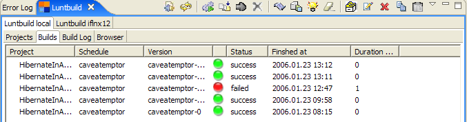
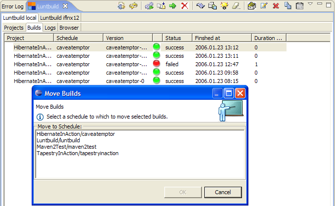

After you specify a search criteria for history builds, the builds will be listed in Builds tab.
You can select a build and display its build, revision or system log.

You can also move the selected build(s) under different schedule:

You can also delete selected build(s).